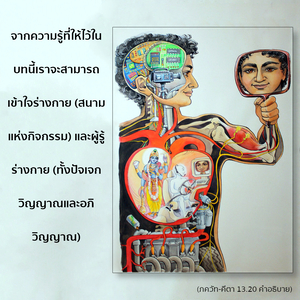

ควรเข้าใจว่าธรรมชาติวัตถุและสิ่งมีชีวิตไม่มีจุดเริ่มต้น การเปลี่ยนแปลงและระดับของวัตถุเป็นผลผลิตของธรรมชาติวัตถุ



จากความรู้ที่ให้ไว้ในบทนี้ เราจะสามารถเข้าใจร่างกาย (สนามแห่งกิจกรรม) และผู้รู้ร่างกาย (ทั้งปัจเจกวิญญาณ และอภิวิญญาณ) ร่างกายเป็นสนามแห่งกิจกรรม ซึ่งประกอบไปด้วยธรรมชาติวัตถุ ปัจเจกวิญญาณที่ถูกร่างกายปกคลุม และรื่นเริงไปกับกิจกรรมของร่างกาย คือ ปุรุษ หรือสิ่งมีชีวิต เป็นผู้รู้ผู้หนึ่ง และอีกผู้หนึ่ง คือ อภิวิญญาณ แน่นอนว่าต้องเข้าใจว่าทั้งอภิวิญญาณ และปัจเจกวิญญาณ เป็นปรากฏการณ์ที่ต่างกันของบุคลิกภาพสูงสุดแห่งพระเจ้า สิ่งมีชีวิตอยู่ในกลุ่มของพลังงานของพระองค์ และอภิวิญญาณอยู่ในกลุ่มของภาคที่แบ่งแยกส่วนมาจากองค์ภควานฺ
ทั้งธรรมชาติวัตถุ และสิ่งมีชีวิต เป็นอมตะ หมายความว่า ทั้งคู่มีอยู่ก่อนการสร้างปรากฏการณ์ทางวัตถุมาจากพลังงานขององค์ภควานฺ สิ่งมีชีวิตก็เช่นเดียวกัน แต่สิ่งมีชีวิตเป็นพลังงานที่สูงกว่า ทั้งสิ่งมีชีวิต และธรรมชาติวัตถุมีอยู่ก่อนที่จักรวาลนี้จะปรากฏ ธรรมชาติวัตถุถูกซึมซาบอยู่ในองค์ภควานฺ มหา-วิษฺณุ และเมื่อถึงเวลาจำเป็นจะปรากฏออกมาผ่านทางผู้แทน มหตฺ-ตตฺตฺว ในทำนองเดียวกัน สิ่งมีชีวิตก็อยู่ในพระองค์เนื่องจากอยู่ภายใต้พันธสภาวะจึงไม่ชอบรับใช้องค์ภควานฺ ดังนั้น จึงไม่ได้รับอนุญาตให้เข้าไปในท้องฟ้าทิพย์ แต่จากการที่ธรรมชาติวัตถุปรากฏออกมาสิ่งมีชีวิตเหล่านี้จึงได้รับอนุญาตให้ปฏิบัติการในโลกวัตถุ และเตรียมตัวเพื่อเข้าไปในโลกทิพย์ นั่นคือความเร้นลับแห่งการสร้างทางวัตถุนี้ อันที่จริงสิ่งมีชีวิตโดยเนื้อแท้ เดิมทีเป็นละอองอณูทิพย์ขององค์ภควานฺ แต่เนื่องจากธรรมชาติที่ชอบต่อต้าน จึงได้มาอยู่ในพันธสภาวะภายใต้ธรรมชาติวัตถุ ไม่สำคัญว่าสิ่งมีชีวิต หรือชีวิตที่สูงกว่าขององค์ภควานฺมาสัมผัสกับธรรมชาติวัตถุได้อย่างไร อย่างไรก็ดี บุคลิกภาพสูงสุดแห่งพระเจ้าทรงทราบว่าสิ่งเหล่านี้เกิดขึ้นได้อย่างไร และเกิดขึ้นเพราะเหตุใด ในพระคัมภีร์พระองค์ตรัสว่าผู้ที่หลงใหลอยู่กับธรรมชาติวัตถุนี้ จะต้องเผชิญกับการดิ้นรนต่อสู้เพื่อความอยู่รอดด้วยความยากลำบาก แต่จากไม่กี่โศลกนี้ เราควรรู้อย่างแน่นอนว่าการเปลี่ยนแปลง และอิทธิพลทั้งหลายของธรรมชาติวัตถุทั้งสามระดับ ก็เป็นผลผลิตของธรรมชาติวัตถุเช่นกัน การเปลี่ยนแปลง และความหลากหลายทั้งหมดที่เกี่ยวข้องกับสิ่งมีชีวิต ก็เนื่องมาจากร่างกาย สำหรับดวงวิญญาณแล้วสิ่งมีชีวิตทั้งหมดเหมือนกัน